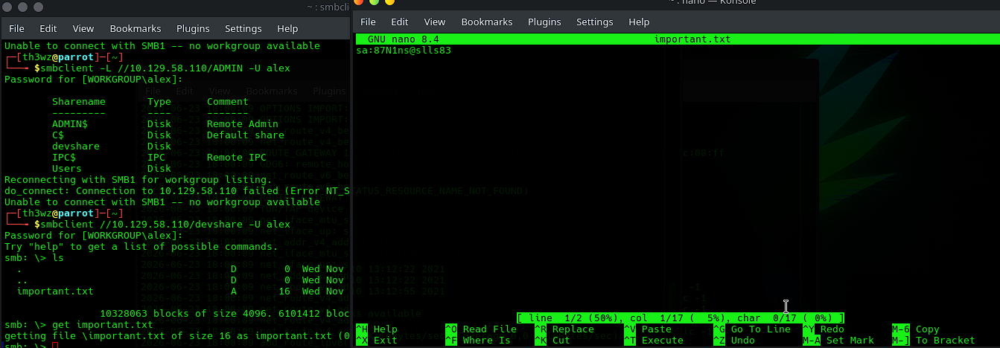
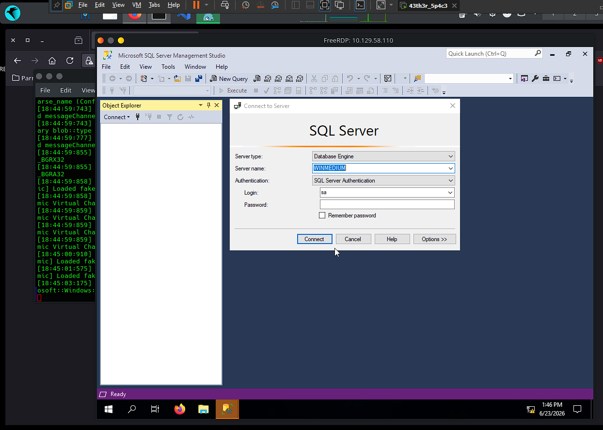
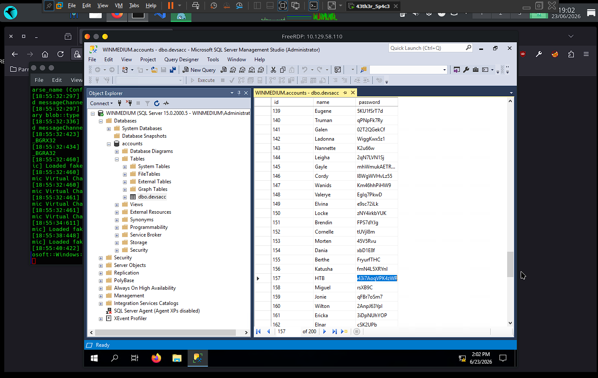

🏴️ Footprinting Tests - Medium
Difficulty: Medium | OS: Windows | Platform: CPTS — Footprinting Study
About this page
Writeup of the footprinting lab (medium machine) from HackTheBox. Focus on
enumerating NFS, SMB, RDP, and SQL Server, chaining credentials
exposed in shared files until obtaining the HTB user's credentials.
About the IPs
Since this is a lab, the target was reset a few times during the study, so
the IP changes between output blocks (10.129.40.142, 10.129.202.41,
10.129.58.110). All outputs were kept exactly as they appeared in the
terminal.
📋 General Information
| Field | Value |
|---|---|
| Hostname | Internal server (Windows) |
| IP | 10.129.40.142 |
| OS | Windows |
| Difficulty | Medium |
| Platform / Module | CPTS — Footprinting |
| Internal domain | web.dev.inlanefreight.htb |
| Date | 23/06/2026 |
| Status | Finished |
Objective
Server with internal network access. The goal is to discover as much
information as possible and find ways to exploit it. The client created a
HTB user as proof of access — we need to obtain their credentials.
🔍 Initial Enumeration
Ports and Services Found
| Port | Service | Version / Banner |
|---|---|---|
| 111 | rpcbind | RPC portmapper |
| 135 | msrpc | Microsoft RPC |
| 139 | netbios-ssn | NetBIOS Session |
| 445 | microsoft-ds | SMB |
| 2049 | nfs | Network File System |
| 3389 | ms-wbt-server | RDP |
| 5985 | wsman | WinRM |
Enumeration Command
Relevant Output (evidence)
PORT STATE SERVICE
111/tcp open rpcbind
135/tcp open msrpc
139/tcp open netbios-ssn
445/tcp open microsoft-ds
2049/tcp open nfs
3389/tcp open ms-wbt-server
5985/tcp open wsman
Findings
- [x] Windows system with multiple services: RPC, NetBIOS, SMB, RDP, and WinRM
- [x] NFS (2049) open — unusual on Windows and the main target of the initial investigation
- [x] RDP (3389) and WinRM (5985) available → potential interactive access vectors
🎯 Techniques Used
| # | Technique | Where / How it was applied |
|---|---|---|
| 1 | NFS enumeration | showmount + nmap nfs* scripts → /TechSupport share |
| 2 | Credential harvesting from files | NFS ticket reveals SMTP config with alex's password |
| 3 | Authenticated SMB enumeration | Login as alex → devshare share → important.txt with sa's creds |
| 4 | Remote access via RDP | xfreerdp as alex → server desktop |
| 5 | Administrative access to SQL Server | Login as sa in SSMS via RDP |
| 6 | Credential exfiltration from database | dbo.devsacc table → HTB user's password |
🚀 Exploitation / Initial Access
Entry Vector
| Field | Value |
|---|---|
| Vector | NFS /TechSupport → chained credentials (SMB → RDP → SQL Server) |
| Flaw exploited | NFS share open to everyone with plaintext credentials |
| Tools | nmap, showmount, mount, smbclient, xfreerdp, SQL Server Management Studio |
| Access obtained as | alex (RDP) → sa (SQL Server) |
Process
1. Enumerate NFS → /TechSupport share open to everyone
2. Mount /TechSupport and read the tickets → SMTP config with alex's password
3. Log into SMB as alex → devshare share → important.txt with sa's creds
4. RDP as alex → open SQL Server Management Studio
5. Connect to SQL Server as sa → explore databases
6. Read dbo.devsacc table → HTB user's credentials
Stage 1 — NFS (port 2049): share enumeration
Detailed investigation with nmap's NFS scripts:
PORT STATE SERVICE REASON VERSION
111/tcp open rpcbind syn-ack 2-4 (RPC #100000)
| nfs-statfs:
| Filesystem 1K-blocks Used Available Use% Maxfilesize Maxlink
|_ /TechSupport 25468924.0 15095364.0 10373560.0 60% 16.0T 1023
| nfs-ls: Volume /TechSupport
| access: Read Lookup NoModify NoExtend NoDelete NoExecute
| PERMISSION UID GID SIZE TIME FILENAME
| rwx------ 4294967294 4294967294 65536 2021-11-11T00:09:49 .
| rwx------ 4294967294 4294967294 0 2021-11-10T15:19:28 ticket4238791283649.txt
| rwx------ 4294967294 4294967294 0 2021-11-10T15:19:28 ticket4238791283650.txt
| ... (several empty tickets)
| nfs-showmount:
|_ /TechSupport
2049/tcp open nlockmgr syn-ack 1-4 (RPC #100021)
Finding
/TechSupport share exposed to everyone (read-only). Most of the
ticket*.txt files are 0 bytes, but one of them has content.
Stage 2 — Reading the ticket: alex's credentials
I mounted the share and read the ticket with content:
sudo mount -t nfs 10.129.202.41:/TechSupport /mnt/TechSupport
sudo cat /mnt/TechSupport/ticket4238791283782.txt
Conversation with InlaneFreight Ltd
...
01:42 PM | alex: here it is:
1 smtp {
2 host=smtp.web.dev.inlanefreight.htb
3 #port=25
4 ssl=true
5 user="alex"
6 password="lol123!mD"
7 from="alex.g@web.dev.inlanefreight.htb"
8 }
Credentials obtained (NFS → ticket)
- User:
alex - Password:
lol123!mD - Email:
alex.g@web.dev.inlanefreight.htb
Stage 3 — SMB (port 445): sa's credentials
With alex's password, I enumerated the SMB shares:

Shares discovered: ADMIN$, C$, devshare ⭐, IPC$, Users.
Inside devshare, the file important.txt:
Credentials obtained (SMB → devshare)
- User:
sa(SQL Server Admin) - Password:
87N1ns@slls83
Stage 4 — RDP (port 3389): desktop access as alex

✅ Successful access to the remote desktop. From there, I opened SQL Server Management Studio.
Stage 5 — SQL Server: access as sa
In SSMS, I connected using the sa credentials obtained via SMB:


Attempt that did NOT work
Logging directly into the database from Linux with the credentials did not
succeed. The path that worked was opening SSMS via RDP and connecting
as sa from there, on the server itself.
🐚 Shell and Post-Access
Access obtained as alex via RDP, and then as administrator (sa) within SQL
Server Management Studio.
Exploring the database → HTB's credentials
Exploring the databases and tables, I located the dbo.devsacc table:

Objective achieved (dbo.devsacc table)
- User:
HTB - Password:
lnch7ehrdn43i7AoqVPK4zWR
Credential chain
| Level | User | Password | Source | Method |
|---|---|---|---|---|
| 1st | alex |
lol123!mD |
NFS (ticket) | RDP |
| 2nd | sa |
87N1ns@slls83 |
SMB (devshare) |
SQL Server |
| 3rd ✅ | HTB |
lnch7ehrdn43i7AoqVPK4zWR |
SQL DB (dbo.devsacc) |
— |
🚩 Flags
- [x]
HTBuser's credentials captured
| Credential | Location |
|---|---|
HTB:lnch7ehrdn43i7AoqVPK4zWR |
dbo.devsacc table (SQL Server) |
📖 Technical Summary
| Field | Value |
|---|---|
| Root cause | NFS share open to everyone with plaintext credentials |
| Attack chain | NFS /TechSupport → alex creds → SMB devshare → sa creds → RDP → SQL Server → dbo.devsacc → HTB creds |
| Final access | sa (SQL Server admin) + HTB's credentials |
💡 Lessons Learned
- What worked: chaining credentials exposed in files — a small exposure on NFS opened up SMB, RDP, and SQL Server in sequence.
- What slowed things down: trying to connect to SQL Server directly from Linux; the working path was using SSMS through RDP, on the server itself.
- Commands to review later: NFS enumeration (
showmount -e, nmapnfs*scripts,mount -t nfs). - Techniques to study further: NFS is frequently overlooked — even read-only, a misconfigured file with credentials is disastrous. Never store passwords in plaintext (configs, tickets, shares, database tables).